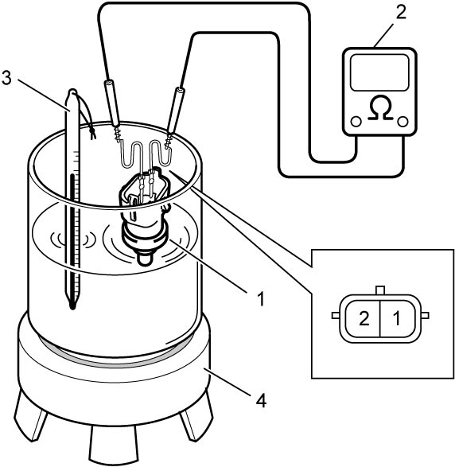

1C
| ECT Sensor Inspection |
Immerse temperature sensing part of ECT sensor (1) in water and measure resistance between sensor terminals while heating water gradually.
If measured resistance is not as specified, replace ECT sensor.

 "Expand image")
| 2. | Ohmmeter | 4. | Heater |
| 3. | Temperature gauge |
Reference resistance of ECT sensor
| Temperature | Resistance |
|---|---|
| 10 °C (50 °F) | Approx. 3.8 kΩ |
| 20 °C (68 °F) | Approx. 2.5 kΩ |
| 30 °C (86 °F) | Approx. 1.7 kΩ |
| 40 °C (104 °F) | Approx. 1.1 kΩ |
| 60 °C (140 °F) | Approx. 0.6 kΩ |
| 80 °C (176 °F) | Approx. 0.3 kΩ |